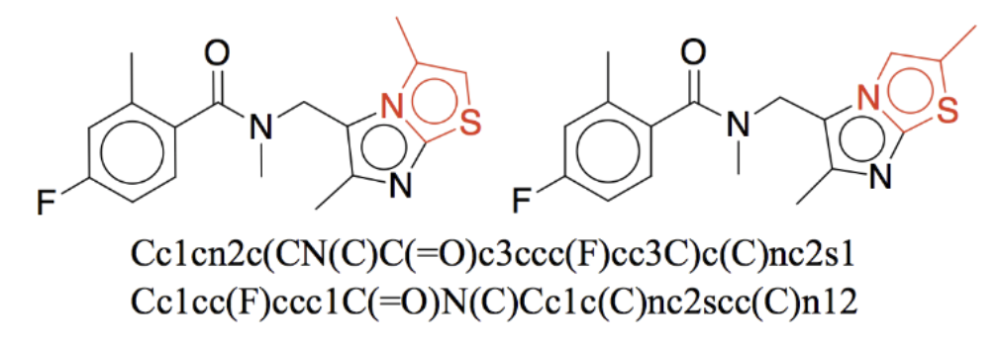
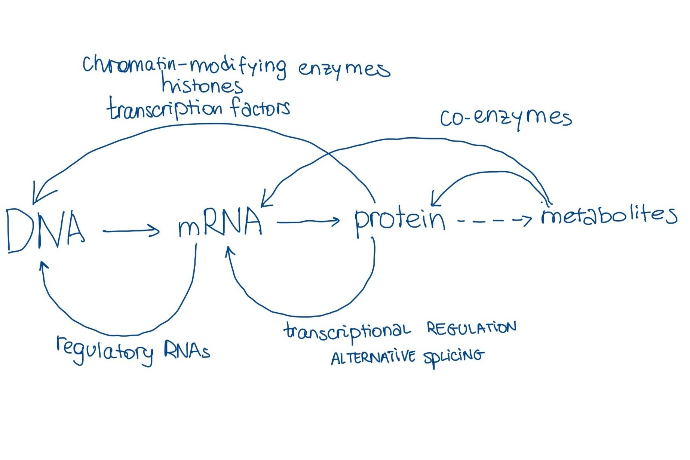

We have forty million compounds and their screenings in Pubmed, zetta-bases of newly sequenced data every year, the full transcriptome of aging mice, and comprehensive maps of the epigenome, yet machine learning and deep learning haven't generated much radical insight from all of this (quite yet). Computational tools are currently in an assistant role at best and, arguably, there is nothing new here. Computer-aided drug design has been around since the 60s (e.g., Dendral). Structure-activity relationship analysis and chemoinformatics, both computationally heavy, have also been around for a while. Biologists regularly used various machine learning techniques since the 90s (as some say "today's ML is tomorrow's statistics"): the first Monte Carlo simulation of protein folding appeared in 1975, the first maximum-likelihood maximization algorithms were used for the construction of evolutionary trees in 1981, the first algorithm for classifying protein structures appeared around 1987. Not to mention all the sequence alignment algorithms that were getting developed in the early 70s.
Despite this, I have been periodically noticing an impression that for ages biology and chemistry have been done with rocks and sticks in caves until deep learning was brought to wet labs by computer scientists, akin to Prometheus bringing fire to mankind. Here I tried to address that impression and go over all the possible reasons for why biology didn't become quite easier with advancements in deep learning and novel architectures, which might or might not be instructive for what we should do about it moving forward.
Outline
- Representations
- Molecular tools still bottleneck the resolution of things
- Information will get distorted and lost even before you can say "PyTorch"
- Biology is more than just a sum of its parts
Representations
Let's look at the elephant in the room - molecular representations. Molecular representation is how data looks when you input it into your model. It is what you assign your properties to, it is what you are predicting labels for.
From the prediction of in vivo properties to off-target toxicities to clearance to half-life prediction to organ-specific effects, there has been a lot published in the direction of AI for drug optimization. Such work requires enormous datasets and PubChem / ChEMBL / BindingDB are normally used as primary references for training, as they have been aggregating this information for many years and have by far the largest repository. Some companies do have proprietary datasets but keep in mind that one such dataset can take millions of dollars to generate (especially if you actually want to measure performance in vivo). Representation and stored information differ between databases but more generally molecular structures are represented as one of the following:
- Fingerprints - binary encoding for whether a particular substructure is present
- String representations - write down the structure as a string of characters (SMILES for molecules / amino acid letters for proteins / nucleotide letters for RNA and DNA), embed the string
- Graphs - treating atoms as nodes and connections as edges, you can construct an adjacency matrix, create embeddings for each node and edge
- Coulomb maps - matrix of Coulombic potentials between atoms with the potential energy of the free atom along the diagonal
- Atomic distance maps - coordinates of each individual atom
The problems of these are numerous and neither of these contains enough relevant information to fully specify chemical structure: some often miss molecular similarity (e.g., SMILEs, one of the most commonly used representations - see Figure 1), struggle with isomers, conformations, and representational redundancy. Graphs, the most suitable of all, do not encode delocalized electrons (e.g., benzene), electron-deficient bonds, and molecules that are constantly re-arranging (see "Let's not forget tautomers" because how would you represent viagra?!!) and basically any phenomena that go beyond just the connectivity of atoms.
Imagine ImageNet that has pictures of cats where half of the cats are defined as dogs, depending on their quantum state. That.

Now, even if you are willing to deal with somewhat unsuitable representations, you will get into deeper trouble: not only can representations miss a lot of information about chemical structure, the chemical structure itself, in general, can not be meaningfully assigned drug features without a great deal of confounding, since its property is conditional on too many things. By itself, a molecule does not possess a dose-response relationship, toxicity, IC50, or affinity (and correlation between physicochemical properties and biological activity even in vitro is found to be generally weak). All of these properties exist only relative to the context in which they are observed and this "performance in a consistent context" is something we have almost no data for. Toxicity for the liver does not mean toxicity for the heart, in addition to these properties depending on the metabolism pass across which you administer the drug, availability of receptors, genotype, and positions of stars in the sky.
Wait - but how about Lipinski rules? The ones where you can sort of predict the drug-likeness of a molecule by just looking at its molecular structure? Although it has been a hit in pharmacology for a while, today, almost 2 decades later, we see that Lipinski rules fail to comply with almost half of the approved drugs, with researchers calling into question whether a thing called "drug-like properties" even exists. Criticism, in this case, is similar -- you can not ignore the molecular context (e.g., availability of transporters to deliver your drug) to predict drug properties. And if you hope to generalize heuristics from the already approved drugs, you will likely miss many important leads (just like it happened with the rule of five).
This is also the reason you can't really translate the success of image processing into biology or chemistry. When you get an image, more often than not it contains all the information you need to derive a specific conclusion. Working with molecules, even when powered with deep learning and machine learning, is non-trivial because half of the information is already missing from the dataset before you even started your work. This sets an upper limit of accuracy of the type of patterns we can extract.
Now, this is just drug molecules, but the problem is applicable to other chemical structures as well - proteins, metabolites, and omics in general (more on this in "Biology is more than the sum of its parts"). There are domains of biology where it isn't all that bad: for example, the amino-acid sequence and its Coulombic map can be used to more or less reconstruct the structure of the protein. You can isolate the folding problem from the cell context around protein and succeed... unless you are trying to predict the folding of a protein given some co-enzymes or ligands, or as part of a protein complex, or under different pH... or some other realistic scenario. In this case, we come back to the same conclusion -- if you can not make some crude assumptions, most problems in biology aren't easily reducible and can't be taken outside of the organismal context. And context is extremely hard to assess - which brings us to the next point.
I should probably add to this section that my criticism of representations has one major limitation - I have no way of stating or proving that poor representations, no matter how irrelevant, do not contain some latent information relevant to the task. That's perhaps the power of deep learning -- with enough data we can make a huge model go brrr and get us good results. Pretty interestingly though, to this day the best results in bio came from smaller datasets (e.g., Alphafold). All in all, it depends on how much you are willing to bet that drug properties depend on the distribution of carbons or relative positions of functional groups and how much you are okay with these properties being off.
Molecular tools still bottleneck the resolution of things
My personal biological red pill happened when I learned that "scRNA-seq captures only 30% of transcripts in the cell in the best-case scenario". The most informative readout of a cell's state captures only 30% of its state! One might think it is not that bad if cells come from a homogenous population (which won't be the case if you work with cancer by the way) and you have enough of them -- the measurements are more robust against noise as you increase the number of cells. But it still means that the signal from every individual cell is weak and we can only make an assessment when all of them are aggregated. As you increase the number of cells, the probability that you become susceptible to Simpson's paradox is more and more likely, so the transcriptional distribution of 1000 cells can be drastically different from the measurements of each individual cell. Depending on your application, this statistical paradox might be a feature and not a bug -- for example, when you want to know how the system behaves on average. It will surely undermine your efforts if you are looking for mechanistic insights into biology - and this is a really big (and if you asked me - most important) class of problems in biology.
Simpson's paradox can happen in big human studies too - for example, in a study by Anne Brunet and Michael Snyder, where creatinine had a positive correlation with aging at a population level but was negatively correlated in more than 70% of individuals studied; and HbA1c correlated positively with aging across cohort but was only significantly correlated in 4 individuals out of 43. All of this is to say that an accurate assessment of intra-sample distribution is important. Improving this 30% at the tool level is where most of the improvement can come from, not from trying to generalize 30% using incrementally better models.
AlphaFold, the most impressive advancement in AI for biology to this day, can come to the resolution that is only as good as (or worse than) crystallography data. You technically can not get to 0.5A atomic resolution with your model if your tool is 1A (A - angstrom). So if membrane proteins crystalize poorly (and they do crystallize poorly), your model will underperform on all of the membrane proteins until you improve the tooling that measures them.
Information will get distorted and lost even before you can say "PyTorch"
Many of the detrimental biases would be introduced not from how the model was fitted, but from everything that has happened before that. Imagine - you are doing a big aging study and want to preserve samples in a biobank. This is critical because new measurement tools are getting developed all the time and you would want to benefit from reassessing the sample with new assays in the future. Or leave samples for someone who wants to reproduce your study. Or you are a biotech company looking to develop biomarkers. Reasons can be multiple and preserving more samples in biobanks is one of our biggest investments in the future, given how heavy is our reliance on them today.
That being said, you either have to fix your samples or do something like snap-freezing. The fixation will just cross-link your nucleic acids, affecting the ultimate distribution you read out later, by killing some of the cells, changing their surface markers, and degrading the nucleic acids, even if everything goes right. Above this all, formalin can be carcinogenic so that is definitely not a good look for a cell. Warm ischemia (time between extraction and preservation) also degrades your sample dramatically and it isn't always recorded, so you can never really calibrate how off you are.
Snap-freezing also won't leave your sample unaffected -- tissue morphology is the first to be affected by ice formation. What I am trying to say here is that things like biomarker discovery are not just a matter of better models. Better models are not coming if we have data that might be only half-true. And data is the direct result of the tools we have.
Take mass spectrometry, one of the most common ways to assess the relative abundance of proteins and metabolites, proteomics and metabolomics respectively. The abundance is estimated through signal intensity, but the signal intensity is never just the abundance. It is always heavily skewed depending on digestion probabilities, ion loss during transmission, ion detection probabilities, and how heavily a given peptide can be ionized, which all are hard to control for. In addition to this, mass spectrometer analyzers can give dramatically different results depending on their ionization method, resolution power, measurement accuracy, multi-dimensional separation, scan speed, dynamic range, analysis throughput, and other troubles. So one protein sample run through two different MSs will have 70-80% reproducibility.
Another case scenario: shakier and I do not have a paper confirmation for this (more like from my conversations with scientists), but imagine you want to use flow cytometry to isolate cells. You sequence them, but the tool itself might not be really good at letting senescent cells pass through, because they are too big. So, if you tried to measure senescence-associated phenotype, you just heavily filtered your cells such that they do not have it. And your sequencing data will miss a lot of important signals precisely about the thing you are trying to measure (which might not fail you if you have controls but is a pretty bad absolute knowledge).
I should probably mention here that scientists and engineers are smart and they usually find some workaround for things. Removing one bottleneck from the system, however, may introduce a different one. Take problems with senescent cells - you can always isolate just the nucleus and figure out its state, but that would miss all the stuff that was outside the nuclei (for example, in eukaryotes - all the transcripts that were being translated into proteins at that current moment).
So you can fight for years for 1% accuracy improvement with batch corrections and better architectures, but you will be matching that accuracy against something that was very messy to start with.
Biology is more than just a sum of its parts
Omic measurements have been arguably revolutionized in the last decade. We can measure the state of RNA, DNA and their chemical modifications, can measure proteins and metabolites, we can even measure the conformation and accessibility of chromatin. So it might feel like, if we just stick all of these together, then we have a very informative readout of the cellular state despite some tool inaccuracies.
Unfortunately, when a million variables interact with each other in a non-linear way, you cannot reconstruct the system by just doing their superposition.
Superposition of interacting, cooperating, and competing components (genetic, epigenetic, proteomic, metabolomic, etc) fails spectacularly when their interaction is non-linear. One example is the central dogma of biology, residue-by-residue transfer of information from genes to mRNA to proteins, which incompletely describes only one angle of the flow of information from DNA to proteins.

But wait - here is where deep learning comes in, no? Non-linear systems modeled in a non-linear way! There is so much multi-omics can borrow from things like sensor fusion in the research of self-driving cars... Right?!
Data fusion can be done (and is done) in biology, but not by retrospectively integrating all the data we ever collected - your tools and your setting should account for future integration. Like with molecular performance collected through multiple disconnected experiments (point 1), aggregating all the multi-omic data we have available has its own troubles. To start with, tool metadata is not always available and, as discussed in a previous section, the same sample analyzed through different tools can give somewhat different results.
There is another challenge for the integration of different modalities - the separation of timescales, sparsity of measurements, and no two cells being the same. Information you integrate should at least describe the same system, but (as of 2022) we can not profile all the omics together in a single cell. As I mentioned in a previous section, even single-cell (sc) RNA-seq, the most developed of the omics methods, is still not exhaustive [30% of cell's transcripts are captured]. So what you ultimately end up doing is taking multiple different single-cells and assessing your modality of interest at each of them separately. This way, no two measurements would ever come from the same cell, which is a challenge when you recognize that neighboring cells can be undergoing drastically different phases - one can be dividing while the other one is dying, one can be senescent while the other one is still under development. You can safely go for the wisdom of crowds when investigating one modality, but it won't work when you are hoping to mechanistically integrate averaged distributions from different omes. In autonomous-driving-sensor-fusion-terms, you will be integrating data from the lidar of the school bus 10km ahead of you (which is only accurate 50% of the time), a 0.1MP camera of your own car, and radar from the house somewhere in suburbs. All to predict whether there is a human in front of you.
That is why, to truly understand things, we need to measure them at the same time from the same cell. There are some interesting protocols being developed (for example, you can combine chromatin accessibility with transcriptome using ATACseq+RNAseq, all in single-cell!), but I do feel that this direction is heavily underappreciated. This is especially true for aging on a mechanistic level (which is why we push for the development of multi-modal assays in Impetus).
Summary
I am pessimistic here, but please do not think I can not see the positive side of things (my take is best described by the "short-term pessimist, long-term optimist" attitude of Derek Lowe). I favor using DL/ML to complement the experiment and not substitute it. My other hope is that field will collectively stop focusing only on things that ML does well in biology (we discovered another correlation - look, everything in a cell is correlated!) and start focusing on things we actually need to do, which will likely require obtaining the right data (and not just the data that is easy to obtain).
Thank you to Ian Thompson, Jeremy Nixon, Keerthana Gopalakrishnan, Ivan Vendrov and Jose Luis Ricon for spending so much time arguing with me and commenting on this essay